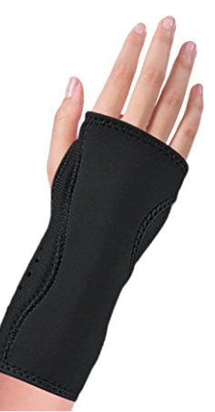
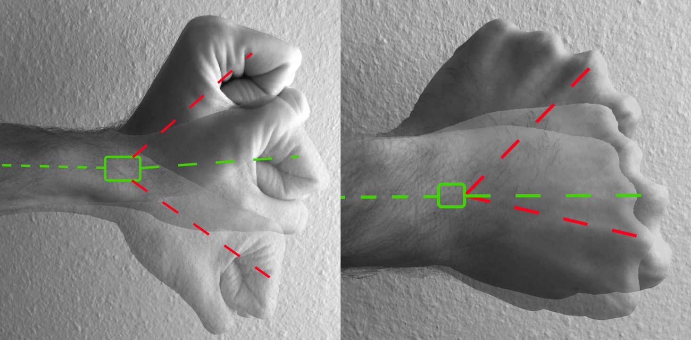

Section 1: Overview
Carpal Tunnel Syndrome (CTS) disrupts the lives of many office workers. It’s a convoluted umbrella slur that does a poor job accounting for its complexities and realities. A true understanding of CTS becomes lost as CTS is inaccurately and frequently substituted as a synonym for wrist pain.
CTS is a collection of symptoms consisting of pain, inflammation, numbness, and tingling through the affected wrist and hand. It has ended the careers of many, leads to countless surgeries, and costs millions of dollars in lost time and treatment each year. CTS is broadly understood to be caused by compression at the carpal tunnel, located at the palm side of the wrist. The presence of swelling or compression can decrease blood flow which the nerve needs to stay healthy and communicate effectively with soft tissues and the brain. If symptoms have been ongoing and not strongly affected by ergonomics or occupational therapy, surgery is likely the next step. But very commonly, as a clinician, I have seen symptoms return after surgery because many of the environmental factors continue to persist.
*Some things to keep in mind before you read ahead - Although much of the content in this article is based on science and clinical experience as a hand therapist, it may be described in a way for the average reader to understand by using metaphorical personifications and analogies instead of direct physiology. This material is not to serve as a self-diagnosis guide and everything stated is merely recommendations that any individual may voluntarily follow. It’s always best to refer to your healthcare provider for long term issues or concerns. If you have any questions, please contact us at andrew.lipiec@rootergonomics.com
Section 2: The Wrist and the Worker...
Office work has classically been associated with CTS because of the high repetition during typing and mousing - potentially causing cumulative micro-traumas and causing an increase in localized swelling. More importantly, but less realized, poor posture and ergonomics can make the situation even worse. Nerves, specifically the median nerve, travel your whole wing-span - from your neck, through your shoulder, past your elbow, and into that compact carpal tunnel. They are like long rubber bands that receive the best blood flow when they are at rest. At its best, it gives you accurate sensations into the palm side of your thumb, index, middle, and half of your ring finger while telling many of your forearm and hand muscles what to do and when. At its worst, the lack of consistent blood flow jumbles up many signals required for effective use of your hand and can cause a variety of unspeakable irritations and pains. Poor office positioning can include having the neck forward, shoulders protracted(rounded forward), and back slouched can tighten and strain the nerves from the foundation before they even get to the carpal tunnel.
Section 3: To Do and Not to Do
So what do we do? Nerves often seem to be triggered for a long time and without rhyme or reason. Having increased awareness of several key characteristics that have been known to cause CTS can decrease your chances of developing it or even relieve ongoing symptoms.
Genetics
First, research has suggested there is a genetic component to the development of CTS. So if you have multiple family members who have had issues with either of their carpal tunnels, you are more at risk. That doesn’t necessarily mean you will develop it, but you may be more prone if the other factors aren’t perfected.
Positioning and Posture
As mentioned earlier, there is a positional and postural component. Some of the following have been heavily associated with irritating the median nerve.
- Having your shoulders elevated and/or rounded forward.
- Holding your neck up, down, or forward for long periods.
- Arms resting away from your center, reaching for a far away keyboard.
- Wrist compression, bearing weight through your hand or wrist for long periods.
- Prolonged positions requiring the wrist to be tilted forward or back.
- Continually working through the pain or numbness and tingling.
No Pain, More Gain
That last point is one of the most important. A general rule is the opposite of no pain, no gain. When a nerve is irritated, it tells you quickly. If you’re working and start to feel some changes in sensation or increasing numbness and tingling, STOP IMMEDIATELY! Discover what you need to change or else the problem will just continue to get worse and probably stay worse. Nerves can change their sensitivity and threshold for pain very quickly and by working through the pain, numbness, or tingling you’re training your nerve to become accustomed to an unwanted problem. It’s best to take the warning seriously and attempt to find out what needs to change for you to be successful.
Section 4: Probelm Solving
The following are simple recommendations to help prevent and potentially alleviate developing symptoms
Wrist Rest
These items are a classic “go-to” fix to help relieve developing wrist pain while mousing or typing. They can be excellent tools when used appropriately. The primary concern is a philosophical difference in how to use them. Yes, a wrist rest can help decrease the wrist from setting on sharp edges. Although, the rest should be only that - a rest. The arm should not be dependent on the padding and should most defiantly not dump the weight of the arm into the rest. No matter how much memory foam or gel is in the rest, continuous weight through the wrist can be detrimental and cause similar compressive forces. It’s best to use when the hand is taking a break from use but not to be utilized continuously. The item featured is available on Amazon but feel free to shop for the style, material, or shape that works best for you and be aware that not all rests are perfectly compatible with each keyboard.
Gimars Upgrade Enlarge Gel Memory Foam Set Keyboard Wrist Rest Pad, Mouse Wrist Cushion Support
$15.39
Click to find on Amazon.com
Nighttime bracing
Statistically, nighttime wrist bracing is one of the best treatments for diagnosed CTS assuming it’s willing enough to be responsive. Sleep position is often something we all have little to no control over. Passively holding the wrist forward or back in awkward sleeping positions further irritates the nerve without letting it get the chance to rest and recovery too. The brace is not meant to be worn incredibly tight but as a support to keep it from bending into one extreme.
Night Wrist Sleep Support Brace - Fits Both Hands - Cushioned
$25.97
Click to find on Amazon.com
Neutral Wrist
For daytime, a good practice to consider is trying to keep your wrist in a relatively neutral position during tasks requiring high repetition or a lot of resistance. This is a foundational concept for office ergonomics. Awkward and deviated wrists can lead to poor circulation and overstrain many muscles and tendons contracting and relaxing all day with normal use. The importance to realize is that it’s better to rely on your body awareness and muscles to maintain a straight wrist rather than depending on a brace. Daytime brace wear in many cases can lead to the development of weakness and limit much-needed movement of the wrist during the day which can help pump swelling out of vulnerable areas.
“Good” Posture
The above sections do a nice job describing posture as what you shouldn’t do, but what SHOULD you be doing? Think of the nerves in your arm as water hoses. When the water is on, it flows strongly to the end of the hose. If there were a kink in the hose anywhere in the chain, the flow of water decreases. If you have multiple kinks, then there may only be a trickle of water exiting or none at all. The idea of posture as it relates to the nerves is to think about how to position the body in a way where there are no kinks in the hose. This means finding how the body is supposed to be naturally without over-activating muscle groups or bad positions that can pull on the nerves in abnormal ways. Ensuring that your screen height is adjusted, the chair is appropriate and supportive, and your desk space is organized can facilitate good circulation and conduction for the nerves. Working from home without appropriate office equipment has many people sitting on couches or even the floor, getting themselves into all sorts of Kama sutra positions. Poor awareness of the neck, shoulder, elbows, and wrists are the cornerstone of how CTS develops for the office worker.
Split keyboard
The keyboard position should seem universal but personal anatomy and preference play an important role. If we transpose our understanding of the neutral wrist in reference to the standard keyboard, we quickly realize that wrists are typically ulnar-ly deviated (wrists drifting toward the little fingers’ sides) or extended back. Split keyboards help to position the wrists straight without requiring creative elbow positioning. It promotes an ideal posture for the arms and the wrists, although it can occasionally carry some minor downsides: decreased use of index fingers to cross the midline of the keyboard, may not fit on some keyboard trays, slight learning curve, etc. Although, it helps to pre-position the arms in a healthier way to prevent strain into the carpal tunnel, leading to the potential development of pins and needles in your digits. It’s an option worth exploring if you’re a non-conformist who likes to flaunt non-conventional gadgets with a purpose. There are several options, including conjoined and separated keyboard. Pictured is a truly split keyboard that allows for complete customization.
Kinesis Freestyle Pro Quiet Ergonomic Split Keyboard
$169.99
Click to find on Amazon.com
Stretches and Exercise
There are a variety of stretches and exercises that can further relieve symptoms related to carpal tunnel syndrome. As with ergonomics, it is best to have an exercise program personalized for your environment, your symptoms, and referencing your personal body mechanics. A tailored program can facilitate good nerve mobility, improved muscle flexibility, and protective strengthening to prevent postural breakdown. The right exercises for the wrong person have the potential to make the situation worse. An ergonomic assessment and review of your individual situation may pave the way to recommending stretches or referral for assessment with your local doctor or occupational/ physical therapist. Contact us at andrew.lipiec@rootergonomics.com for more information.
Section 4: Summary
Carpal Tunnel Syndrome can be a serious problem. With good adaptation and self-awareness, it may be preventable and/ or treatable. One of the largest deficits in conservative prevention and treatment for CTS is a lack of postural awareness. That should be a primary area of focus in conjunction with positioning and compression prevention. Formal occupational therapy or hand therapy may be warranted for ongoing symptoms. Contact your doctor if you have developing concerns. Feel free to reach out to Root Ergonomics with further questions, comments, or concerns when it comes to office ergonomics or carpal tunnel syndrome.